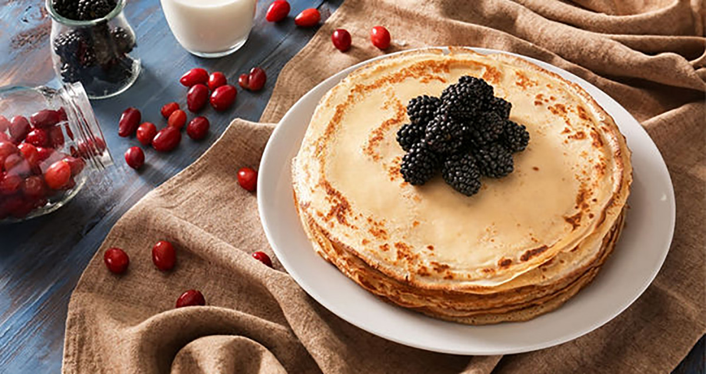

Pannkakor

Recept på goda pannkakor
Detta recept visar hur man gör klassiska svenska pannkakor
steg för steg.
Ingredienser
För 4 personer
- 2 1/2 dl vetemjöl
- 1/2 tsk salt
- 6 dl mjölk
- 3 ägg
- smör (till stekning)
- sylt, bär eller frukt till servering
Så här gör du
- Blanda mjöl och salt i en bunke.
- Vispa i hälften av mjölken och vispa till en slät smed.
- Vispa i resten av mjölken och äggen.
- Låt smeden vila ca 10 minuter.
- Stek tunna pannkakor i lite smör, för varje pannkaka i en stek- eller pannkankspanna.
- Servera med sylt, bär eller frukt